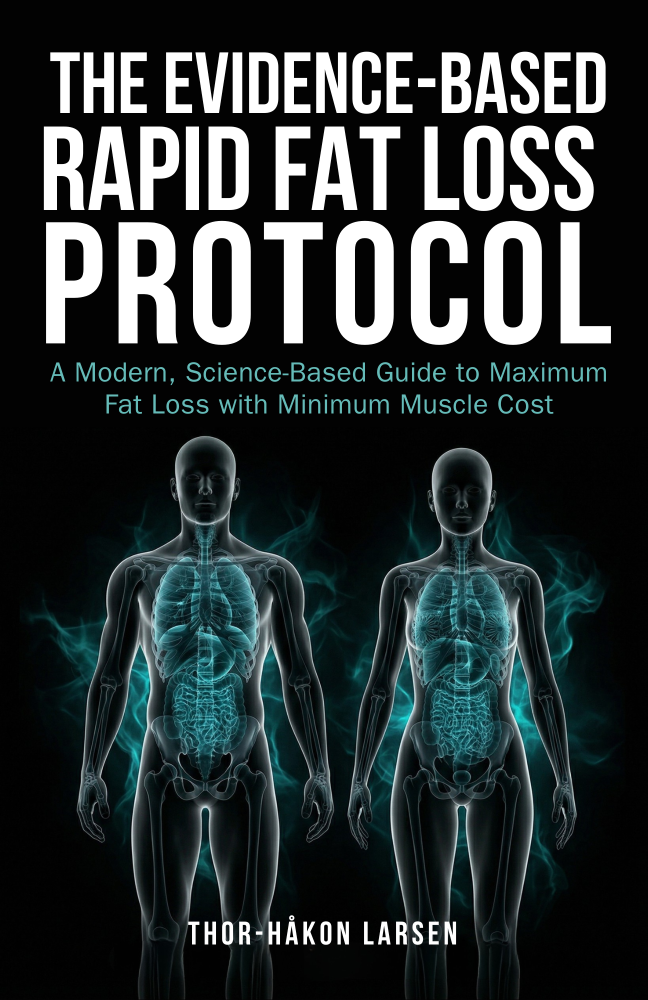

The Evidence-Based Rapid Fat Loss Protocol
A Modern, Science-Based Guide to Maximum Fat Loss with Minimum Muscle CostEn moderne, vitenskapsbasert guide til maksimal fettreduksjon med minimalt muskeltap
McDonald wrote the book on rapid fat loss in 2005. The science has moved on. Protein recommendations have nearly doubled. Training advice has reversed. And GLP-1 agonists have put forty million people into aggressive deficit. “Slow and steady” lost the argument — the data shows fast initial weight loss predicts better long-term maintenance.McDonald skrev boken om hurtig fettreduksjon i 2005. Vitenskapen har gått videre. Proteinanbefalingene har nesten doblet seg. Treningsrådene har snudd. Og GLP-1-agonister har satt førti millioner mennesker i aggressivt underskudd. «Sakte og stødig» tapte argumentet — dataene viser at raskt initialt vekttap predikerer bedre langtidsvedlikehold.
About the BookOm boken
The Evidence-Based Rapid Fat Loss Protocol delivers three proven rapid fat loss models — Block PSMF, Intermittent PSMF, and Rapid Minicut — with current protein targets (2.3–3.1 g/kg LBM), evidence-based training protocols designed for extreme deficit, complete exit strategies including reverse dieting, and population-specific modifications for women, older adults, and GLP-1 users. Every recommendation carries an evidence grade showing exactly how confident the science is.
The Evidence-Based Rapid Fat Loss Protocol leverer tre velprøvde hurtige fettreduksjonsmodeller — Block PSMF, Intermittent PSMF og Rapid Minicut — med oppdaterte proteinmål (2,3–3,1 g/kg fettfri masse), evidensbaserte treningsprotokoller designet for ekstremt underskudd, komplette exit-strategier inkludert revers-dietting, og populasjonsspesifikke tilpasninger for kvinner, eldre voksne og GLP-1-brukere. Hver anbefaling har en evidensgrad som viser nøyaktig hvor trygg vitenskapen er.
What You’ll LearnHva du vil lære
- Three proven protocols: Block PSMF (2–3 weeks), Intermittent PSMF (rest-day fasting), Rapid Minicut (4–6 weeks at 40–50% deficit)Tre velprøvde protokoller: Block PSMF (2–3 uker), Intermittent PSMF (hviledagsfaste), Rapid Minicut (4–6 uker på 40–50 % underskudd)
- Current protein targets for extreme deficit: 2.3–3.1 g/kg LBM — nearly double McDonald’s 2005 recommendationOppdaterte proteinmål for ekstremt underskudd: 2,3–3,1 g/kg fettfri masse — nesten det dobbelte av McDonalds 2005-anbefaling
- Two evidence-based training protocols for deficit — and the decision criteria for choosingTo evidensbaserte treningsprotokoller for underskudd — og beslutningskriteriene for å velge
- Complete electrolyte and supplement stack — the non-negotiables that prevent medical emergenciesKomplett elektrolytt- og tilskuddsstabel — de ikke-forhandlingsbare som forebygger medisinske nødsituasjoner
- The full exit strategy: reverse dieting protocol, maintenance duration, and monitoring frameworkDen komplette exit-strategien: revers-diettprotokoll, vedlikeholdsvarighet og overvåkningsrammeverk
- Population-specific modifications for women, older adults, obese individuals, and GLP-1 usersPopulasjonsspesifikke tilpasninger for kvinner, eldre voksne, personer med fedme og GLP-1-brukere
Who This Book Is ForHvem boken er for
For coaches, dietitians, and advanced self-directed dieters who need science-based rapid fat loss protocols that go beyond generic calorie-cutting advice. Also for practitioners working with GLP-1 clients who need structured approaches to maximize fat loss while preserving muscle mass.
For coacher, ernæringsfysiologer og avanserte selvstyrte personer som trenger vitenskapsbaserte hurtige fettreduksjonsprotokoller som går utover generiske kaloriråd. Også for praktikere som jobber med GLP-1-klienter og trenger strukturerte tilnærminger for å maksimere fettreduksjon og bevare muskelmasse.
DetailsDetaljer
LanguageSpråk
EnglishEngelsk
GenreSjanger
Fat Loss & Body CompositionFettreduksjon & kroppssammensetning
ComparableSammenlignbare
The Rapid Fat Loss Handbook (McDonald), The Renaissance Diet 2.0 (Israetel), Starving to Obesity (Fung)
Stay in the LoopHold deg oppdatert
Get notified when this title is available.Få beskjed når denne tittelen er tilgjengelig.
SubscribeAbonner